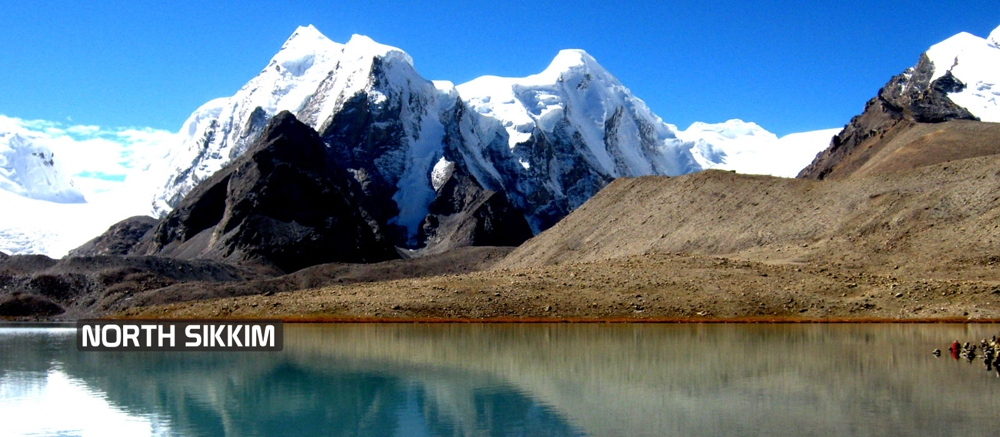

NORTH SIKKIM

NORTH SIKKIM Tour is the most beautiful excursion of Nature, especially, the exploration of the eastern mountain range of the Great Himalaya. One of the most breathtaking landscapes in India, the region of the Northern part of the Sikkim state is the marvel of Nature of the Earth. The pristine view of the white snowy mountain tops, vivacious waterfalls, bustling rivers, majestic lakes and the vivid flora and fauna have the capacity to spellbind its visitors with its spectacular Natural untouched beauty.So, wait no more! And book northsikkim tour packages.
PACKAGE OFFERED:
- DURATION:7 NIGHTS,8 DAY.
- COST:18,000/- PER HEAD WITH ALL EXPENCES.
- DATE OF JOURNEY:2ND OCTOBER,2021.
BACK TO HOME PAGE